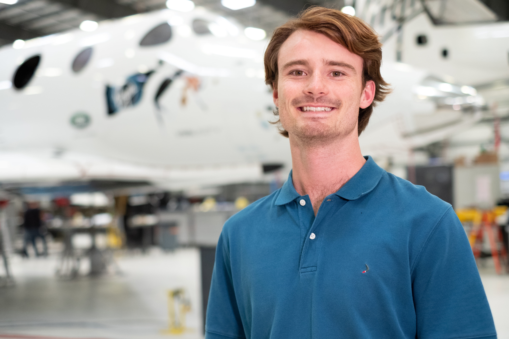

I was born in Lund, Sweden and currently live in Encinitas, California. I have had dual citizenship with Sweden and the US since 2013 and have thus been fortunate enough to enjoy growing up in Sweden/California. I have a younger sister who is finishing her undergrad in Biology, following in the footsteps of my mom and dad who work in Medicine and Drug Discovery.
This is my second year as a masters student in Aero Astro, concentrating in Guidance Navigation and Control. I am finishing up my final quarter while working for a Remote Sensing company in the Bay called Capella Space. As a Guidance Navigation and Control engineer I work on a variety of problems regarding how the satellite moves in space and accomplishes its tasks. It is a demanding and rewarding position that offers a multitude of opportunities to explore new topics.